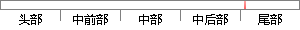

Angular通过指令（directive）扩展HTML的语法 ，可以通过{{}}进行数据绑定，使用DOM控制结构来进行迭代或隐藏DOM片段等等。
片段位置图

相似结果|
相似片段 1：directives的结构，使浏览器能够识别除HTML外的新语法。另外，进行数据绑定可以使用双大括号{{))；迭代或者隐藏DOM片段功能的实现可以通过使用DOM的控制结构；其还支持表单和表单的验证功能
相似片段 2：{{))语法进行数据绑定，使用DOM控制结构来实现迭代或者隐藏DOM片段，支持表单和表单的验证，能将逻辑代码关联到相关的DOM元素上，能将HTML分组成可重用的组件。通过使用模板，我们可以把model和
相似片段 3：]院渊1冤使用双大括号{{}}语法进行数据绑定曰渊2冤使用 DOM控制结构来实现迭代或者隐藏 DOM片段曰渊3冤支持表单和表单的验证曰渊4冤能将逻辑代码关联到相关的 DOM元素上曰渊5冤能将 HTML分
相似片段 4：框架来实现用户代码的调用。类库是函数的集合，用户可以使用类库来辅助WEB应用编写。Angular数据绑定用双大括号，隐藏或者迭代DOM片段用DOM控制结构，还能实现HTML分组重用。AngularJS
|
※ 片段修改建议 ※
近似词参考：- 通过：经由过程
- 扩展：扩大
- 通过：经由过程
- 进行：举行
- 使用：利用
- 控制：节制
- 结构：布局 构造
- 进行：举行
- 隐藏：埋没 潜藏 隐蔽 暗藏
- 片段：片断
系统自动生成语句：Angular经由过程指令（directive）扩大HTML的语法 ，可以经由过程{{}}举行数据绑定，利用DOM节制布局来举行迭代或埋没DOM片断等等。
注：本片段修改建议为系统自动生成，仅供参考。